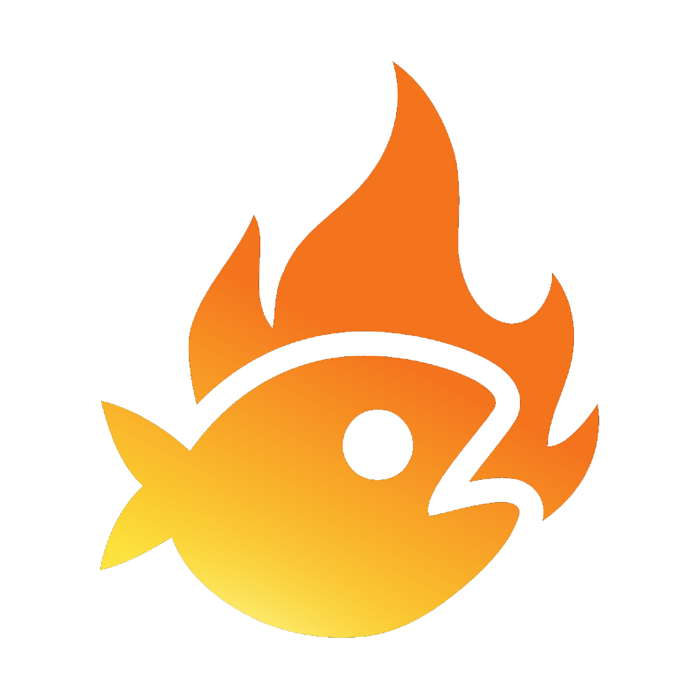

The Background was recorded in a VRChat World called "Cunks Coughing City" by Cunks_Feet

A Public event that allows people to freely express themselves without many restrictions. People are given the freedom to be as chaotic, offensive, and loud as they wish to be.
The main objective of DAILY VRCHAT is to maintain a public <>< group instance for 2 hours.
After the event, everyone will be kicked from the instance.
Daily VRChat starts from 9 PM to 11 PM UTC. More information at theziver.com
Join the Main <>< group here: https://vrc.group/FISH.9566
to receive notifications on when the event starts.
If you're new to the ≺ ≻ ≺ community, here's a quick breakdown:
< represents an increase in chaos.
> represents the process of adding structure to reduce the chaos.
< despite adding structure, chaos increases again.
<>< symbolizes a process where chaos increases, the structure is added to create some order, but then chaos increases again, resulting in a state of "STRUCTURED CHAOS"
THIS SERVER ISN'T MEANT FOR THE EASILY OFFENDED PEOPLE!!
You may encounter trolls, rage baiters or people who'll try to get a reaction from you!